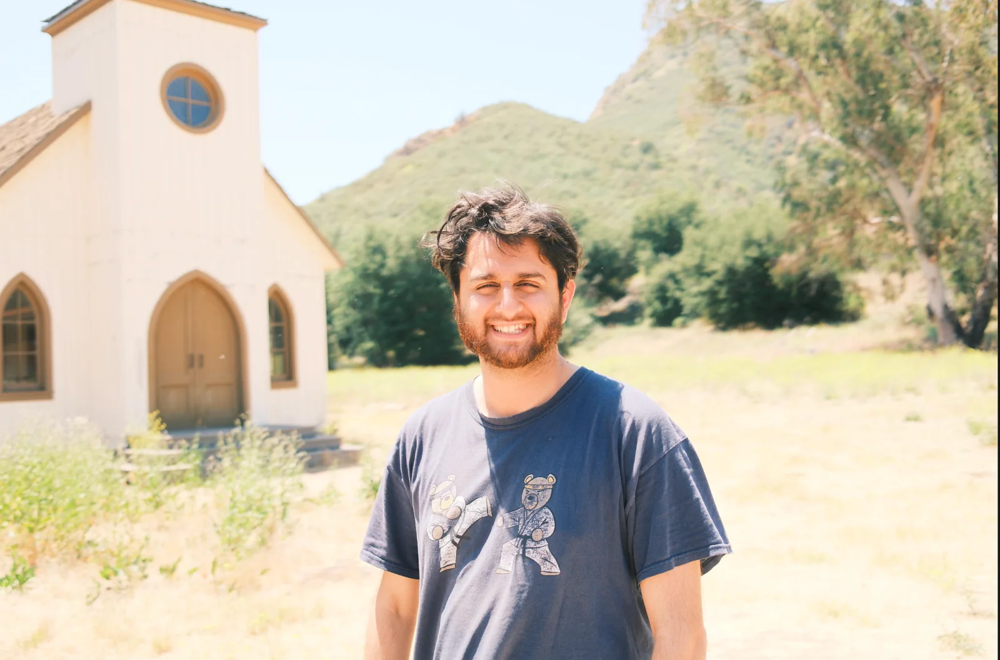

Shoutouts
Congrats to “The K-pop dancer” on getting married! More on that later but just want to say how happy I am for you!
Monday
One thing I realized looking back at past newsletters is I used to have more creative descriptions for saying I went to work. I want to bring that back
After another day pushing pencils made of LLM flavored bits I met up with “The Professor” and walked around GGP. We don’t usually hang out much 1:1 so it was really nice to get the chance to hang out and chat about life more deeply than we normally do. He asked me an interesting question “How often do I feel joy?”. I thought about it for a moment and the answer I came to was that I feel joy pretty often. I’m quite excited about a lot of things that I do and am fortunate to have a routine that energizes me. I really like hanging out with friends, running, walking, eating good food, and doing random bits all of which I do quite often. I also very much enjoy my job most of the time as well which I am very grateful for.
Thinking about it some more I am really grateful for my life which is worthwhile to keep in mind amidst all the self improvement I’m trying to do. I know I have a lot of things I’m working on and there have definitely been times where I’ve been down on myself but it’s worth it to remember how many things I have going for me including all of you reading this. Including you “La Tacqueria Royalty”. I didn’t mention you for any reason in particular but you’re great! 10/10 with rice!
Tuesday
Once I finished watching Cursor do my work I headed over to Bon Nene to meet up with “The Professor,” “The Quant,” “The Pickleballer,” and another friend for dinner.
Afterwards I headed to government class where we did a deep dive into housing policy. I learned that there is a statewide thing called the Regional Housing Needs Allocation (RNHA) that mandates that certain levels of housing be built statewide over an 8 year period. As part of that each county / city has their own housing goals they need to meet as part of that, and every so often across the 8 year period if places are behind targets states can force measures to mandate building more housing. Thankfully as we all know SF is an *INCREDIBLY* easy city to build housing in so there is *NO* chance we would ever do something like miss our mark and force measures amending zoning regulation to build more housing right? Well surprise, that's exactly what's gonna happen and keep happening all the way up until 2031 when the cycle of RHNA ends. For context over the 8 year period we need to build roughly 82k units of housing (10k a year) and we do more like 2-3k a year so you can see the deficit here. I thought this was really cool to learn about as housing is one of the most politically divisive issues in SF with lots of people either being pro housing or wanting to maintain the “character” of SF.
Wednesday
After another day in the C factory I met up with “The Professor” and “The Pickleballer” to take one more stab at seeing if Garden Creamery would have the mugicha. Today is the last day “The Professor” will be in the Bay so we had to make it count. When we got to Garden Creamery, there were two things that were immediately discouraging. The first was that we didn’t see the mugicha listed on the flavors of the day, and the second was that the person I talked with at Garden Creamery wasn’t working there today. “The Professor” suggested we give up and accept it but I insisted on trying more saying “I’ll put the ball in the damn hoop”. When we went to get our flavors I asked the person if they had the flavor and he said no. Afterwards I said that “The Professor” will be flying back to Vienna and that today would be our last chance. He checked in the back and unfortunately they truly didn’t have any and I was forced to give up. Even still I feel better knowing that I exhausted every possibility first.
Afterwards we went to “The Taco’s” apartment and hung out some more. This will be our last time just casually hanging out like this around here until “The Professor” comes back probably next year and it was nice soaking in the nostalgia of it all. Just hanging around like this (with salmon that “The Professor” would cook and I would not eat), was one of my most common social activities back in the pre newsletter era of 2024 and these last two weeks definitely felt like a reminder of a very 2024 brand of fun.
Thursday
After my shift in the mines I met up with “The Quant,” “The Taco,” and “The Professor” to drive down to L.A for the wedding. We started around 4:30 and got there around 1. The traffic coming out of SF definitely didn’t help. Originally I had thought about flying but I figured since everyone else was driving a road trip could be fun.
We mainly passed the time by asking each other a bunch of lateral thinking puzzles. For anyone unaware, a lateral thinking puzzle is a puzzle where someone gives you a scenario and you have to ask a bunch of yes/no questions to figure out what happened. One of our favorite examples is
There is a room with a table, 53 bicycles, and four men. One of the four men is dead. How did he die?
Along the way we passed by Castroville, the artichoke center of the world (according to a sign it has) which prompted “The Professor” to ask the question “If the love of your life lived in Castroville and never wanted to leave would you move there to be with them?” I answered no because there is no way I could see myself living in a city that is 1 mile wide and roughly half a mile across. Also on a more realistic note I don’t know what love of my life would want to live there either.
At one point I really wanted to take a nap but since “The Quant” was doing all the driving I felt the need to stay up and keep the conversation going. While that was happening “The Quant” asked about different stages of LLM training and I broke down the difference between pretraining, midtraining, and post training in a way that I thought was pretty coherent and sensible but “The Quant” later told me sounded very tired. The takeaway from that, in case you were wondering, is to not train an LLM from scratch unless you are OK pretraining on a lot of data unrelated to your domain specific task and instead use a pretrained LLM and finetune it (or prompt engineer it).
After many lateral thinking puzzles and a few more jokes about Castroville, and my midnight LLM primer we made it to the lovely town of Agora Hills. We walked into the hotel and I made a clumsy joke “Good morning, good night or whatever” to the person working the front desk which I think earned me a half hearted pity chuckle. Once we got checked in I immediately crashed.
Friday
I woke up early in the morning and did all my token maxxing early in the day so I could explore L.A with everyone else in the afternoon. I also added a new edition to the newsletter site where I put anki cards for my government class. At the end of the class I have to take and get 90% on an exam to pass so I wanted to make some flash cards to help; and I figured at least a couple people (you can probably guess who you are), may be interested in learning about local government as well so I figured I’d put them on the newsletter website.
After that me along with “The Taco,” “The Professor,” and “The Quant” hit the town! We start by going to a restaurant called Clark’s Oyster bar in Malibu where I decide in a very un Humza like fashion to try the scallops. I had some scallops as a kid and they weren’t too bad so I figured I’d try them again since the waiter said they were the best thing on the menu and … well … alright “The Philosopher” I guess here I’m not beating the picky eater allegations. Sigh. They were like a real kick in the taste buds. Of the 4 I got I finished 1 with some help and pawned the rest off on “The Quant”.
From there we went to explore Santa Monica where we met up with “The Sparkle” who just got in for the wedding. We walked a bit around the pier and the beach and got to see a little bit more variety in people watching than you normally would in SF between all the people running, rollerskating, and best of all the vloggers. There were these people videoing themselves running which definitely feels more SoCal influencer than NorCal.
There was also one of those outdoor gyms with a rope you could climb which we all failed at pretty hard except for “The Professor” who managed to get further up there than any of us.
Later we went to dinner where the rest of the gang went to some Italian place and I in very Humza fashion gunned it straight for the In-N-Out and ordered 5 double doubles and fries which tasted great :D.
The hotel we were staying at had a jacuzzi so the day ended with a nice soak there.
Saturday
Me, “The Quant,” “The Sparkle,” and “The Professor” originally went to one of Malibu's finest beaches where me and “The Quant” would take a surfing lesson while the others would hang out. However the day of, I got cold feet remembering that I got rekt the last two times I went surfing and decided to hang out with the others instead. Also the beach wound up being pretty cloudy due to the Marine layer so me, “The Professor,” and “The Sparkle” wandered around the Santa Monica mountains and found a spot with an old film set that was used in a lot of Western movies until it burned down in 2018. We wandered around the remains and took some pictures one of which of me actually looks reasonable

Afterwards we went to one of L.A’s many strip malls to get what we all agreed was mediocre poke. At this point one thing I want to express my appreciation for is the oddity that is SF geography. I really like how it’s not very samey with a bunch of random neighborhoods thrown together in a way that seems really random and absurd rather than just copy pasting the same (admittedly nice) strip mall together a bunch of times. It gives S.F a very improvisational look that I think really suits my vibe. L.A was definitely more of a planned city but sometimes that’s not always great. Also I guess I’ll defend S.F’s (relatively) large amount of public transit since at least I don’t need to (have “The Quant”) drive *everywhere* like I do in SoCal.
I abandoned the mediocre poke bowl and got In-N-Out again bringing me up to 8 double doubles consumed within 24 hours. The one redeeming thing about SoCal is that there are more In-N-Outs and they don’t have the audacity to all be in the most touristy part of the area like we do. Seriously why is the only In-N-Out in SF by FISHERMAN’S WHARF. HONESTLY!!!
Well that got kinda whiny didn’t it. Let’s move past that and get to the crowning jewel, the reason we are all here. The wedding of “The K-pop dancer!” Me, “The Professor,” “The Quant,” “The Taco,” and “The Sparkle” roll up to the venue where we meet up with “The Plower” and take our seats. As it turns out “Mirandom thoughts” is one of the bridesmaids for the wedding so she was up there center stage next to “The K-pop dancer” on her big day. It really was an incredibly lovely occasion and it was super heartwarming to see her and her now husband up there as the Minister recounted the story of how they met, fell in love, and how their relationship bloomed throughout the years. Many congratulations, it was an incredibly beautiful and joyous moment! I’m so happy to see the union of what is now Mr. and Mrs. “The K-pop dancer”!
After the main ceremony we all sat down and listened to some speeches and just generally caught up. We got a couple chances to chat with the woman of the hour and express our congratulations and get some pics. As a sidenote I learned during the wedding vows that apparently she likes to tell a lot of “groan inducing puns” which surprised me as I’ve never heard any of these. “The K-pop dancer” the next time you come up I have to hear some of these puns!!
The wedding continued in traditional western fashion with a first dance followed by cake cutting and finally a big dance party where we all danced! There’s not really much I can say here that captures it but it was a lot of fun getting down on the dance floor with everyone celebrating and having a good time like that.
We said our goodbyes and bid “The K-pop dancer” one last farewell and heartfelt congratulations on her big day.
On a last minute whim me, “The Sparkle,” “The Quant,” and another friend from the group decided to go star gazing. We wandered around some random park in Thousand Oaks for about half an hour and saw The Big Dipper which was neat. I very rarely spot constellations so that was a fun touch
I took a picture which I don’t think adequately captures it but it was pretty cool. I do wish I got one with the dipper though.
Sunday
Today it was time to leave L.A and head back to NorCal. On the way back up it would only be me and “The Quant”. “The Taco” was headed down to San Diego and “The Professor” was headed back to Vienna. I gave him one last bow and hug before bidding him adieu. “The Professor” when you come back next year you better ACTUALLY SURPRISE ME this time or imma be sad. I already have multiple ideas for how you could pull it off. One tip is to try to coordinate with other friends of mine not directly in our group. If you need help contacting these people ask “The Quant” and I’m sure he can recommend some good ones. I’d tell you but I feel like I shouldn’t do everything here. I BELIEVE IN YOU!
After about 7 hours we get back to S.F and I celebrate by enjoying the ability to go for a walk :D. Shortly after getting back I head over to “The Notetaker’s” place to see him dye his hair. “The Yogi” did the hair dyeing as she had a lot of experience, and of course we also had “The Raja of Rhythm” and “Granola Girlie” for a bit of extra good luck. And that good luck paid off because the hair dyeing turned out great. His hair is now the sexiest shade of pink this side of The Mission.
We then went to Beretta for dinner where I had a surprisingly good vegan pizza.
While at dinner I got asked an interesting question “What do you wish people knew about you?” For me in particular that strikes me as surprisingly blank considering that pretty much anyone who knows me gets a weekly update on me going into more detail than they probably care to learn about me.
When I brought that up the question changed to “What kind of impression do you want to have on people?”. That too is interesting since the earlier part of this year was me trying rapidly to improve my first impression considering how bad it can be at its worst (yet somehow still good enough for whoever you are reading this to stick around). After bringing up that point the question changed again to “What do you want people to know you for?” Well now here’s a version of the question I feel I can answer about the same as anyone else. I mentioned funny because obviously I make a lot of jokes and it’s important to me as a way of expressing myself, reliable is a big one (I want to be known as someone you can count on), kind (although given my personality I don’t think polite). I’m sure there are more things but those were the ones that were top of mind when the question was asked.
Afterwards, we did karaoke over at TaishoSF. I definitely was not expecting to do karaoke on a Sunday night but its that kind of unexpected reminder of free will that makes it a lot more fun. We did a bunch of the usual bangers like Mr. Brightside and so on. I also got to do Rap God for the first time in forever which was immensely satisfying.